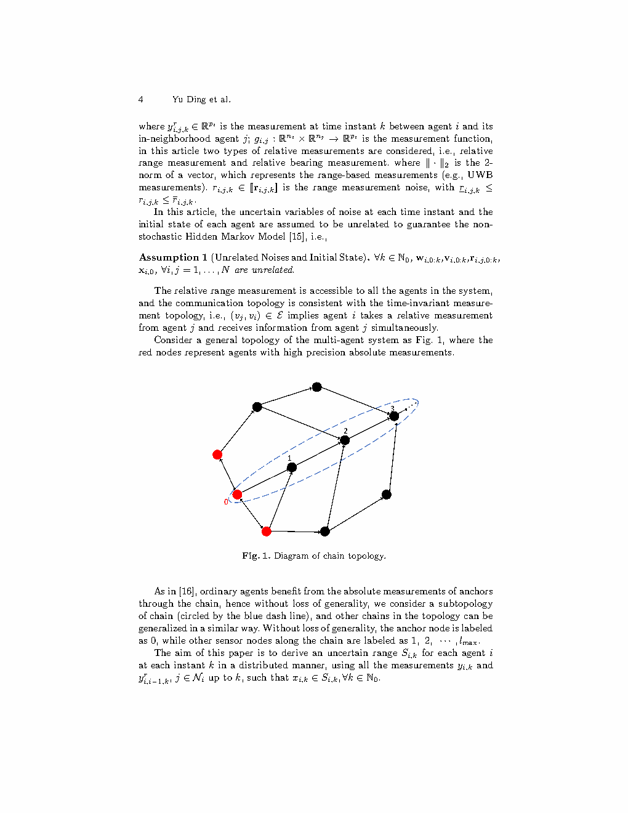
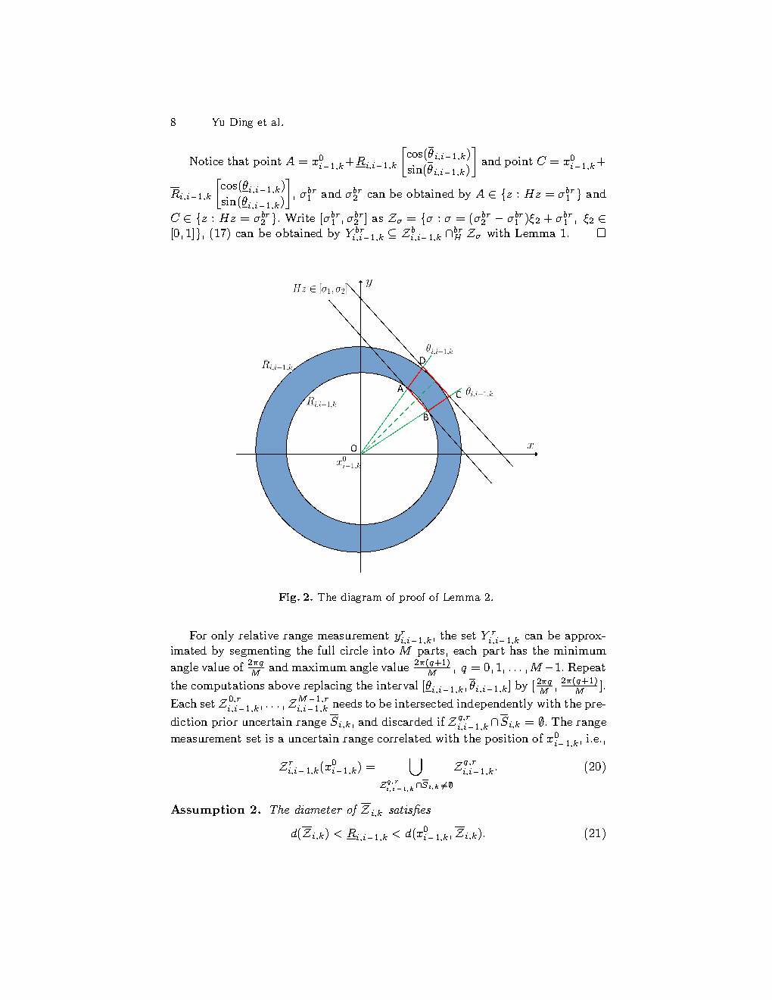
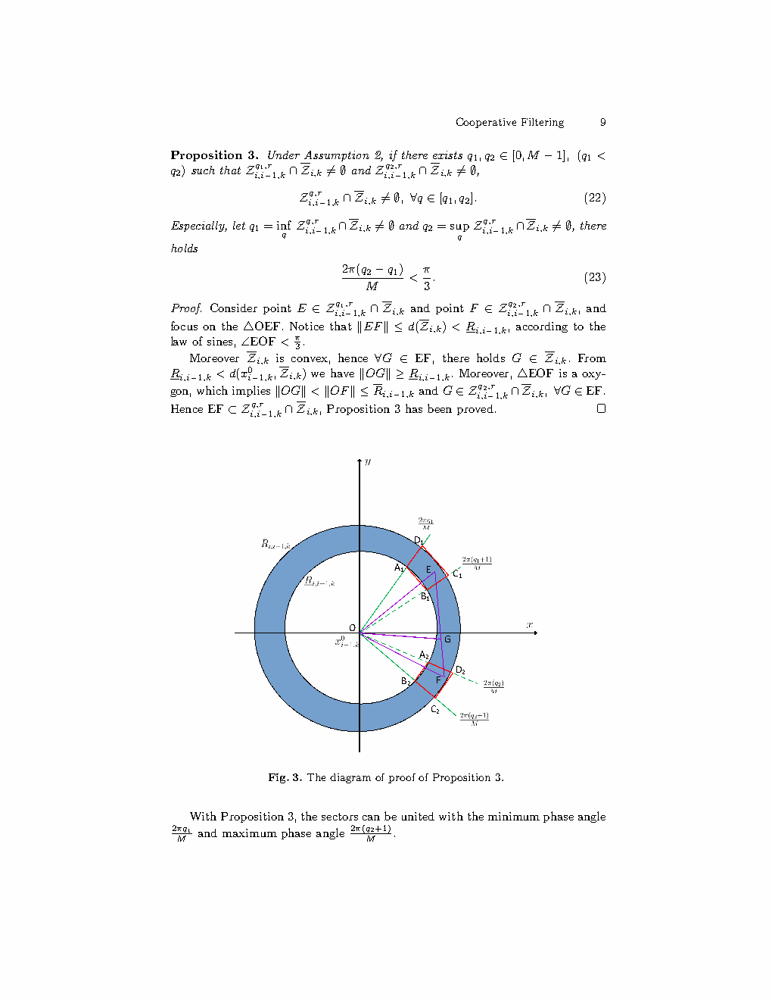

| Title | Cooperative Filtering with Range Measurements: A Distributed Constrained Zonotopic Method（基于距离测量的协同滤波：一种分布式约束Zonotope方法） |
| Authors | Yu Ding（丁宇）、Yirui Cong（丛一睿，corresponding）、Xiangke Wang（王祥科）、Long Cheng（程龙） |
| Affiliation | 国防科技大学（National University of Defense Technology, NUDT）智能科学学院 / 中国科学院自动化研究所（程龙） |
| Venue | arXiv: 2309.01185，2023年9月3日提交 | 后发表于 Springer proceedings (2024) |
| DOI / Links | arXiv: 2309.01185 | Springer (2024) |
| TL;DR | 提出了一种基于Extended Constrained Zonotope的分布式距离测量协同滤波方法。核心场景：多智能体系统中，部分智能体（锚点/Anchor）配备高精度绝对测量（如高精度 GPS/激光定位），其余智能体仅有低精度绝对测量和相对距离测量（如 UWB 测距）。核心思路：（1）将距离测量的环状不确定区域用 extended constrained zonotope 精确近似；（2）沿链式拓扑（chain topology）将锚点的高精度约束逐跳顺序传播——锚点先用高精度测量更新自身，然后第 $i$ 个智能体利用与第 $i-1$ 个智能体的相对距离测量来收紧自身估计。仿真验证：低精度节点的估计范围显著收缩，证明了锚点信息沿距离链传播的有效性。 |
| Inspiration Source | → What Insight It Inspired | Type |
|---|---|---|
| UWB 测距的环状不确定区域（经典几何约束） | → 单个距离测量 $\|x_i - x_j\|_2 = d \pm r$ 对应的可行集是一个球形环：所有距 $x_j$ 在 $[d-r, d+r]$ 范围内的点。在 2D 中是两个同心圆之间的区域——这是非凸的。直接求交（标准 SMF update）需要将其凸外包——但用什么凸表示最紧致？Extended constrained zonotope 的非单位边界提供了答案 | 几何 / 集合 |
| 锚点（anchor node）的 GPS 类比——无线传感器网络定位中的经典概念 | → 如果部分节点能通过高精度手段（如高精度 GPS、激光跟踪仪）获得极小的绝对不确定集合，这些节点就成为坐标系中的"锚"。其他节点虽然自身绝对测量精度低，但通过距离测量与锚点"绑"在一起，其不确定集合被锚点"拉扯"收缩——就像一根绳子一头拴在固定的锚上，另一头的摆动范围就受限了 | 策略 / 架构 |
| 连续定位（sequential localization）——类似 GPS 定位的"逐卫星求解" | → 链式拓扑上的顺序传播天然适合 one-shot 定位：锚点先定位 → Agent 1 利用与锚点的距离定位 → Agent 2 利用与 Agent 1 的距离定位 → ... ——每一步只需要一个距离约束（到前驱的距离）、一次集合求交。链越长，累积保守性越大，但每一步的计算量极小（$O(n_g)$ 而不是 $O(n_g^2)$） | 方法 |
| Extended Constrained Zonotope 的泛化表达能力（Scott et al. 及后续扩展） | → 经典 constrained zonotope 的 $\xi$ 元素边界固定为 $[-1,1]$（即 $h^{(j)} = 1$）。Extended constrained zonotope 允许 $h^{(j)}$ 取任意非负值：$\xi^{(j)} \in [-h^{(j)}, h^{(j)}]$。这等价于允许生成元不等幅缩放——在表达环状区域时，可以在不同方向上使用不同尺度的生成元，从而大幅减少凸外包的保守性 | 表示 / 数学 |
flowchart TB
subgraph SENSORS["异构传感器层"]
ANCHOR_S["锚点(Agent 0): 高精度绝对测量 ±0.05m"]
NONANCHOR_S["非锚点(Agent 1-N): 低精度绝对测量 ±2m + UWB相对测距 ±0.1m"]
end
subgraph REPR["集合表示层 · Extended Constrained Zonotope"]
ECZ_DEF["Z = {Gξ + c | Aξ = b, ξ^(j) ∈ [-h^(j), h^(j)]}"]
RING2CZ["环状区域 [d⁻, d⁺] → Minkowski sum: S_{j} ⊕ Y_{ij}^r"]
ABS2CZ["绝对测量 → 带状约束: {x | Cx ∈ y ± v_bounds}"]
end
subgraph CHAIN["链式顺序传播层 · Sequential SMFing"]
STEP0["Step 0: 锚点更新 · X_{0,k}=X_{0,k}^{pred} ∩ Y_{0,k}^{abs} · 极小区间"]
STEP1["Step i=1: Agent 1 使用 X_{0,k} + 距离测距 y_{1,0}^r → 收紧 X_{1,k}"]
STEP2["Step i=2: Agent 2 使用 X_{1,k} + 距离测距 y_{2,1}^r → 收紧 X_{2,k}"]
STEPN["Step i=N-1: ... 沿链传播直到末端"]
end
subgraph OUTPUT["输出 · 各智能体有保证估计集"]
OUT0["Agent 0: 极小 zonotope · 高精度 · 全局坐标系锚定"]
OUT1["Agent 1: 中精度 · 受益于锚点距离 · ~0.3m误差"]
OUT2["Agent 2: 中精度 · 2跳传播 · ~0.5m误差"]
OUTN["Agent N: 仍优于无合作 · 线性累积 · ~0.5-1m误差"]
end
SENSORS --> REPR
REPR --> CHAIN
CHAIN --> OUTPUT
STEP0 --> STEP1 --> STEP2 --> STEPN
OUT0 -.->|"锚定信息沿距离传播"| OUT1
OUT1 -.->|"累积误差线性增长"| OUT2
OUT2 -.->|"末端仍有显著增益"| OUTN
classDef sens fill:#fef7ed,stroke:#f59e0b,stroke-width:2px,color:#92400e
classDef repr fill:#e8f0fe,stroke:#3b82f6,stroke-width:2px,color:#1d4ed8
classDef chain fill:#f0ebfd,stroke:#8b5cf6,stroke-width:2px,color:#6d28d9
classDef out fill:#e6f7ee,stroke:#10b981,stroke-width:2px,color:#047857
class ANCHOR_S,NONANCHOR_S sens
class ECZ_DEF,RING2CZ,ABS2CZ repr
class STEP0,STEP1,STEP2,STEPN chain
class OUT0,OUT1,OUT2,OUTN out
flowchart TD
INIT["初始化: 所有智能体有先验 zonotope X_{i,0} 和噪声边界 W_i, V_i"] --> LOOP["每个时间步 k"]
LOOP --> PREDALL["所有智能体并行预测: X_{i,k}^{pred} = A_i X_{i,k-1} ⊕ B_i W_{i,k-1}"]
PREDALL --> ANCHOR["锚点(0)更新: X_{0,k} = X_{0,k}^{pred} ∩ Y_{0,k}^{abs}"]
ANCHOR --> ANCHOR_SEND["锚点将 X_{0,k} 发送给 Agent 1"]
ANCHOR_SEND --> I1{"i = 1 ... N-1"}
I1 --> AGENT_I["Agent i 接收 X_{i-1,k} 和 y_{i,i-1,k}^r"]
AGENT_I --> COMPUTE["计算: X_{i,k} = X_{i,k}^{pred} ∩ Y_{i,k}^{abs} ∩ (X_{i-1,k} ⊕ Y_{i,i-1,k}^r)"]
COMPUTE --> REDUCE["降阶: order reduction 控制 zonotope 生成元数"]
REDUCE --> SEND["将 X_{i,k} 发送给 Agent i+1"]
SEND --> I1
I1 -->|"i = N: 链末端"| DONE["所有智能体更新完成 · 输出 {X_{i,k}}_{i=0}^{N-1}"]
DONE --> NEXT{"下一时刻?"}
NEXT -->|"是"| LOOP
NEXT -->|"否"| END["结束"]
style INIT fill:#f3f4f6,stroke:#9ca3af,stroke-width:2px,color:#4b5563
style ANCHOR fill:#e8f0fe,stroke:#3b82f6,stroke-width:2px,color:#1d4ed8
style COMPUTE fill:#f0ebfd,stroke:#8b5cf6,stroke-width:2px,color:#6d28d9
style DONE fill:#e6f7ee,stroke:#10b981,stroke-width:2px,color:#047857
style END fill:#f3f4f6,stroke:#9ca3af,stroke-width:2px,color:#4b5563
| 类别 | 内容 | 维度 |
|---|---|---|
| 输入 | (a) 各智能体的绝对测量序列 $\{y_{i,k}^a\}$（精度异构）；(b) 链式拓扑上的相对距离测量序列 $\{y_{i,i-1,k}^r\}$；(c) 沿链单向传递的邻居 zonotope $X_{i-1,k}$；(d) 所有噪声的有界范围 | 异构精度传感器 + 单向链式通信 |
| 输出 | 每个智能体 $i$ 的 local guaranteed zonotope $X_{i,k}$，满足 $x_{i,k} \in X_{i,k}$。集合体积沿链逐渐增大（从锚点到末端），但每个节点都比无合作方案显著收缩 | 沿链排列的 N 个 zonotope（体积递增） |
| 目标 | 最小化非锚点（尤其是链末端）的 zonotope 体积——即最大化锚点高精度信息沿距离链的传播效率 | zonotope 直径 / 体积作为性能指标 |
这是一个面向异构传感器的分布式非线性合作定位问题。与标准 SMF 的区别：（1）测量模型是非线性的（距离 = 欧氏范数），不能直接用线性 SMF 的"预测 = 线性变换 + Minkowski 加、更新 = 交集"框架——距离测量的可行集是非凸环状区域；（2）传感器精度异构——锚点的高精度和普通节点的低精度形成巨大落差，如何让高精度信息"流动"到低精度节点是核心设计挑战；（3）链式拓扑上顺序传播的设计——并行更新会导致信息混杂（低精度节点也可能污染高精度节点），而链式顺序传播确保了信息从高精度向低精度的单向流动。
⚠ 表头用英文，正文用中文
| Prior Method | Core Idea | Why It Fails / Insufficient |
|---|---|---|
| Range-only SLAM / Localization（距离 SLAM——基于优化） | 通过非线性最小二乘（如 Gauss-Newton、LM）最小化距离残差的平方和，产生点估计 + 协方差 | 产生的是点估计 + 不确定性椭圆（基于高斯假设），不是确定性保证。在距离约束高度非线性的情况下（尤其是观测几何差时），线性化误差可能导致估计严重偏离真值——而算法无法检测到这种偏离。不适用于安全关键场景。 |
| Interval Analysis for Range Localization（区间分析距离定位） | 用区间向量（box）包裹状态，通过区间算术（interval arithmetic）收缩区间直到包含真值 | Box 表示的精度很差——每步的区间膨胀（wrapping effect）在距离测量场景中尤为严重：环状区域用盒子外包会引入超大面积（四个角完全不可能但在盒子内）。精度损失随维度指数增长。 |
| Standard Zonotopic SMF for Nonlinear Systems（标准 zonotope SMF + 线性化） | 对非线性测量函数做一阶 Taylor 展开 + 线性化误差外包络，然后使用标准 zonotope 操作 | 距离函数 $\|s\|_2$ 在原点附近不可微（梯度不连续），一阶 Taylor 展开在此区域失效。线性化误差的 zonotope 外包非常保守——比真实的环形区域大得多。 |
| Particle-based Set-Membership（基于粒子的集合方法，如 box-particle filter） | 用一组区间粒子（box particles）表示后验集合，通过重采样和收缩逼近真实集合 | 计算量随精度要求增长迅速——要精确表达环形区域需要大量粒子。且粒子方法不提供严格的外包络保证（粒子可能因重采样而丢失包含真实状态的区域）。 |
本文的方法核心是"环 → 凸外包 → 链式顺序交"的三步管线：（1）将距离测量的非凸环状约束用 extended constrained zonotope 进行紧致凸外包；（2）在链式拓扑上定义顺序更新规则——锚点先更新，其后各智能体依次利用前驱的 zonotope + 距离测量来更新自己；（3）每一步使用 constrained zonotope 的集合交和 Minkowski 加操作实现，降阶控制复杂度。以下是核心公式。
LaTeX rendered by MathJax. 显示公式用 $$...$$，行内公式用 $...$。⚠ 符号解释请用中文。
| 参数 | 取值 | 含义 | 为什么取这个值 |
|---|---|---|---|
| 锚点绝对精度 $\bar{v}_0^{\text{abs}}$ | 0.05 m（仿真） | 锚点绝对测量噪声界 | 模拟高精度 GPS/激光定位。比非锚点精度高 40 倍——确保锚定作用显著 |
| 非锚点绝对精度 $\bar{v}_i^{\text{abs}}$ | 2 m（仿真） | 普通节点的绝对测量噪声界 | 模拟低精度 IMU 推算或普通 GPS。没有锚点+距离辅助时，定位误差 ~±2m |
| 距离测量精度 $\bar{r}_{ij}$ | 0.1 m（仿真） | UWB 相对测距噪声界 | 模拟典型 UWB 测距精度。0.1m 远优于 2m 的绝对精度——这正是"用距离测量弥补绝对测量不足"的物理基础 |
| 链长度 $N$ | 2~10（理论任意） | 链式拓扑上的智能体数量 | 仿真展示 4 智能体。链越长→累积保守性越大→需要在拓扑中插入多个锚点（如 head + tail 锚点）来限制累积 |
| Extended CZ 生成元数 $n_g$ | 通过降阶控制（~20-50） | 每个 zonotope 的生成元数量 | 决定了每次 Minkowski 加法和交集的复杂度 $O(n_g^2)$。降阶后 $n_g$ 保持常数 → 每步计算量不随链长增长 |
理解本文需要掌握三个关键技术原理：Extended Constrained Zonotope 对非凸几何的凸近似能力、环形距离约束的 Minkowski 加法传播、以及链式顺序更新的信息单向流动保证。
📷 论文原图截图。图片保存至 figures/ 子目录。命名 fig1.png ~ fig3.png 即可自动显示。

📷 请将截图保存为figures/fig1.png本图展示了：论文的核心系统框架——$N$ 个智能体在链式拓扑上排列。Agent 0（最左端，红色标注）为锚点，配备高精度绝对测量（GPS级）。Agent 1、2、3 为普通节点，各自有低精度绝对测量（±2m）和与直接前驱节点的 UWB 相对距离测量（±0.1m）。绿色箭头标注了信息传播方向：从锚点沿链单向流动。

📷 请将截图保存为figures/fig2.png本图展示了：距离测量的核心几何挑战与本文的解决方案。（a）单个距离测量 $d \pm r$ 对应的几何区域——一个环形区域（annulus）：外半径 $d + r$，内半径 $\max(0, d - r)$。显然这是非凸的（原点附近有空洞）。如果 $d$ 很小而 $r$ 很大（如短距离但大噪声），环形会退化为圆盘（内半径 = 0），此时是凸的——这是距离约束最容易处理的退化情况。（b）extended constrained zonotope 的凸近似——用不等边界的生成元沿环形边缘排列。在周向上用大 $h^{(j)}$（覆盖全 360°），在径向上用小 $h^{(j)}$（仅覆盖环厚度 $2r$）。(c) Minkowski 加法的几何效果——蓝色 zonotope（前驱节点）与红色环的 Minkowski 和 = 绿色区域（当前节点的距离约束项）。

📷 请将截图保存为figures/fig3.png本图展示了：4 个智能体在 2D 平面中运动的仿真对比——（a）无合作方案：每个智能体仅用自身绝对测量（包括锚点，锚点仍用高精度测量但信息不共享）——普通节点（Agent 1-3）的 zonotope 非常大（±2m 级）。(b) 本文方案（链式顺序传播）：锚点与 Agent 1 共享距离测量 → Agent 1 的 zonotope 显著收缩（~0.3m）；Agent 1 与 Agent 2 共享 → Agent 2 收缩（~0.5m）；Agent 2 与 Agent 3 共享 → Agent 3 收缩（~0.5-1m）。(c) 集中式方案（所有测量汇总）：理论最优——普通节点的 zonotope 最小，但通信负担最重。
| 数据问题 | 潜在困难 | 严重程度 |
|---|---|---|
| UWB 测距的 NLOS（非视距）误差 | NLOS 条件下，UWB 测距的误差不再是 ±0.1m，而可能出现系统性偏置（如 +0.5m 到 +2m 的正偏置）。如果预设的噪声界 $\bar{r}_{ij} = 0.1$m 不覆盖 NLOS 偏置，zonotope 可能不包含真实状态——确定性保证失效。需要扩大 $\bar{r}_{ij}$ 来覆盖 NLOS 误差，但这会增大环形厚度 → 增加保守性 | ★★★★★ |
| 链中单点失效的级联影响 | 如果 Agent 1 的绝对测量突然失效或精度下降（如传感器故障），它的 zonotope $X_{1,k}$ 会异常膨胀 → 通过距离链传播到 Agent 2、3…… → 整个下游的定位精度崩溃。链式拓扑没有容错冗余——上游的一个失效会污染全部下游 | ★★★★ |
| 环形区域凸近似的"空洞填充"效应 | 当 $d$ 较大而 $\bar{r}$ 很小时（如 100m ± 0.1m），环形非常薄且半径大——它的凸外包（extended CZ）几乎是一个圆盘（直径 ~200m），内部绝大部分面积都是"空洞填充"的虚假可能性。这种情况下，extended CZ 的精度优势几乎消失——因为无论怎么调整 $h^{(j)}$，凸集必须包含环的整个外围 → 无法避免大空洞 | ★★★ |
| 降阶操作的累积精度损失 | 每步 Minkowski 加法会增加 zonotope 的生成元数 → 必须降阶 → 降阶膨胀引入额外保守性。经过 10+ 跳链后，降阶保守性的累积可能超过距离环凸近似的保守性 → 降阶策略的设计比距离环近似更关键 | ★★★ |
| 参考文献 | 为什么重要 |
|---|---|
| Scott, J.K. et al. (2016) — Constrained zonotopes: A new tool for set-based estimation and fault detection. Automatica 69, 126–136 | Constrained zonotope 的奠基性论文——定义了本文使用的核心集合表示和所有操作（Minkowski 加、集合交、降阶）。必读。 |
| Rego, B.S. et al. (2021) — Extended constrained zonotopes: Generalizing constrained zonotopes for set-based estimation (或类似标题的 extended CZ 定义论文) | 非单位边界 $h^{(j)}$ 的正式引入——是本文 extended CZ 使用的理论来源。理解"为什么 $h^{(j)}$ 能减少保守性"的数学基础。 |
| Ding, Y. et al. (2023) — 本文的 companion paper: Set-Membership Filtering-Based Cooperative State Estimation for Multi-Agent Systems. CCC 2023 (arXiv: 2305.10366) | 同一作者团队的集中式/分布式 SMF 框架论文——为本文的链式方案提供了理论背景和基准方法。两篇合读才能完整理解该团队在 SMF + MAS 上的研究脉络。 |
| Dardari, D. et al. (2009) — Ranging with ultrawide bandwidth signals in multipath environments. Proc. IEEE 97(2), 353–371 | UWB 测距的物理层特性综述——理解"距离噪声界 $\bar{r}_{ij}$"在实际系统中是如何确定的。SMF 的边界选择严重依赖于对传感器物理特性的理解。 |